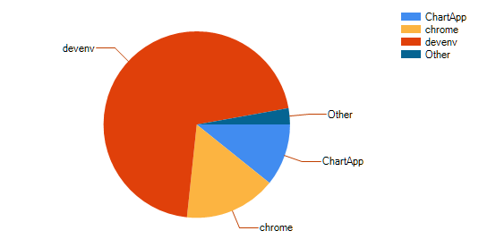

BigBrother
A gyakorlat célja olyan kliens építése, mely naplózza a gépen történő szoftverhasználatot, és egy közös adatbázisba menti a hallgatóktól gyűjtött eredményeket. A gyakorlat során létre kell hozni egy második, külön projektet is, melynek segítségével lekérdezhetők és elemezhetők az eredmények. Tehát a gyakorlat végére lesz egy adatgyűjtő és egy adatmegjelenítő projekt.
Ebben a példában két különböző programot is meg kell írni, és melyeknek egy közös adatbázishoz csatlakoznak. Mindkét feladatrészben valósítsd meg a megfelelő ORM osztályokat ugyanahhoz az adatbázishoz! A látványosabb eredmények elérése érdekében érdemes a közös központi adatbázissal dolgozni, amibe a teljes évfolyamról gyűjtött adatok belekerülnek.
FIGYELEM! A feladatot eredetileg egyetemi géptermi gyakorlatra terveztük, ami adatvédelmi szempontból teljesen más, mint a saját gépünkről adatot gyűjteni és megosztani. Mielőtt futtatod az adatrögzítőt, nézd meg, mi van nyitva, vagy ha aggályod merül fel, ugord át az adatgyűjtéssel kapcsolatos lépéseket!
A SoftwareUsage adatbázis
Ez az adatbázis csak az egyetemi IP-tartományból vagy VPN-en keresztül érhető el!
| Szerver | sql.2rpi.hu,7000 |
| Felhasználónév | hallgato |
| Jelszó | Password123 |
| Adatbázis | SoftwareUsage |
BigBrother projekt felépítése
BigBrother ablak beépítése
▷ Hozz létre egy új WinForms projektet, de a neve NE legyen BigBrother, mert ez lesz a következő lépésekben betöltött Form neve is.
▷ Töltsd le a BigBrother.zip állományt, és a benne levő két fájlt add hozzá a projekt könyvtáradhoz. (Legegyszerűbb behúzni egérrel.)
▷ Mindkét fájl elején cseréld le a névteret (Szoft2.Week10.BigBrother) a projekted nevére.
BigBrother adatok mentése
▷ A Form1 konstruktorában példányosítsd a BigBrother osztályt és rendelj eseménykezelőt az AblakVáltás eseményéhez.
▷ Az AblakVáltás eseménykezelőben hozz létre egy új SoftwareUsage rekordot, és értelemszerűen töltsd fel a tulajdonságait az esemény argumentumában szereplő értékekkel. (Az ID automata számlálós kulcs mező, nem szabad feltölteni!)
▷ Add hozzá az új rekordot az adatbázis tábládhoz.
Megoldás:
public Form1()
{
InitializeComponent();
BigBrother bb = new BigBrother();
bb.AblakVáltás += Bb_AblakVáltás;
}
private void Bb_AblakVáltás(object sender, AlkalmazásHasználatEventArgs e)
{
// A program indulásakor még nincsenek feltöltve az argumentumok, és nem akarunk üres sorokat írni az adatbázisba!
if (e.Ablakcím == null ||
e.AlkalmazásNév == null ||
e.LoginNév == null)
return;
SoftwareUsage s = new SoftwareUsage();
s.WindowTitle = e.Ablakcím;
s.ApplicationName = e.AlkalmazásNév;
s.Login = e.LoginNév;
s.Time = (int)e.Idő;
context.SoftwareUsages.Add(s);
context.SaveChanges();
}
Ha elkészültél, akkor futtasd a programot! A Form1 és a BigBrother ablakok is meg fognak nyílni. Óra végéig hagyd futni ezt a programot, és ne zárd be ezt a két ablakot (oldalra kihúzhatók, hogy ne legyenek útban). A program mostantól folyamatosan adatbázisba naplózza a gépeden történő ablakváltásokat.
A továbbiakban nyiss egy új Visual Studio-t, és egy teljesen új projektbe dolgozz!
Adatelemző projekt felépítése
Felhasználói felület
Hozzd létre az ábrán látható elrendezést! A jobb alsó sarokban látható objektum egy Chart. (Behúzás után még oszlopdiagrammot mutat, később beállítjuk.)

Login lista
A bal oldali ListBox-ba kérdezd le a felhasználók Login neveit, és valósítsd meg hozzájuk a szűrést.
A SoftwareUsage a táblában az egyes Login nevek többször is szerepelnek, de mi csak egyszer szeretnénk megjeleníteni őket a listában. Ehhez a lekérdezés után az aggregáló függvényekhez hasonlóan meg kell hívni a Distinct() metódust. Ez minden egyforma adatsort csak egyszer fog megjeleníteni, azonban a mi adatsorainknak van egy ID nevű kulcsmezője is, tehát minden sor különbözik. A select részben viszont le tudunk szűkíteni a lekérdezett adatokat kizárólag a Login-ra, és így már megfelelően működik majd a függvény. (Ezzel a megközelítéssel elhagyható a DisplayMember beállítása, hiszen csak egy mezőnk van, így a ListBox automatikusan tudja, hogy azt kell megjelenítenie.)
Megoldás:
// Fontos, hogy csak a Login mező legyen lekérdezve, különben nem működik majd a Distinct parancs
var logins = from x in context.SoftwareUsages
where x.Login.Contains(txtLoginFilter.Text)
select x.Login;
// A listává alakítás előtt a Distinct paranccsal biztosítjuk, hogy minden login név csak egyszer szerepeljen a listában
listLogin.DataSource = logins
.Distinct()
.ToList();
Kiválasztott felhasználó szoftverhasználatának lekérdezése
▷ A projekt adatforrásai közé vedd fel a SoftwareUsage osztályt!
▷ A felső rács adatforrásaként állítsd be a SoftwareUsage osztályt!
▷ Rendelj eseménykiszolgálót a ListBox SelectedIndexChanged eseményéhez. Az eseménykiszolgálóban a felső rácsban jelenítsd meg a kiválasztott felhasználó összes ablakváltásáról rendelkezésre álló adatot! A lekérdezés eredményét kötheted a softwareUsageBindingSource.DataSource-án keresztül.
var selectedLogin = (string)listBox1.SelectedItem;
var applicationData = from x in context.SoftwareUsages where x.Login == selectedLogin select x;
// A lekérdezést eredményét betöltjük a már korábban létrehozott BindingSource-ba, amit a design nézetben bekötöttünk a DataGridView adatforrásának
softwareUsageBindingSource.DataSource = applicationData.ToList();
Szoftverhasználat idejének összesítése alkalmazás szerint
▷ Adj a projekthez egy AppTime osztályt
public class AppTime
{
public string ApplicationName { get; set; }
public int Time { get; set; }
}
▷ Az új osztályt vedd fel a projekt adatforrásai közé: Build-eld a projektet és DataSources ablakban hozz létre egy adatkötött objektumot az új osztály alapján.
Korábban csak adatbázis táblák esetén alkalmaztuk ezt a módszert, de bármilyen osztályból létre lehet hozni az adatkötött objektumokat. Az adattáblák esetén sem maguk a táblák, hanem az ORM során, a táblákból létrehozott osztályokat kötöttük be.
▷ A jobb-alsó rács adatforrása legyan az AppTime osztály. Mikor beállítod tervezőből, létre fog jönni egy appTimeBindingSource is.
▷ A ListBox SelectedIndexChanged eseménykiszolgálójában az előző LINQ lekérdezés eredményének felhasználásával összesítsd az időket alkalmazásonként!
▷ appTimeBindingSource.DataSource-át a fenit lekérdezés eredményére.
Megoldás:
// Csoportosítjuk a korábban lekérdezett adatokat az Applikáció neve szerint
// A csoportokból egy-egy AppTime példányt hozunk létre
// A csoportosításhoz használt mező(k) a Key tulajdonságból kérdezhetők le
// Minden egyéb mezőt újabb LINQ segítségével lehet aggregálni (pl.: Sum)
var appTimes = from x in applicationData
group x by new { x.ApplicationName } into g
select new AppTime()
{
ApplicationName = g.Key.ApplicationName,
Time = (from x in g select x.Time).Sum()
};
// A lekérdezést eredményét betöltjük a már korábban létrehozott BindingSource-ba, amit a design nézetben bekötöttünk a Chart adatforrásának
appTimeBindingSource.DataSource = appTimes.ToList();
// Chart esetén ezzel a sorral lehet frissíteni a megjelenést, ha változtak a forrás adatok
chart1.DataBind();
Chart adatkötés
A Chart-ban egy kőrdiagrammon szeretnénk megjeleníteni azt, hogy a jobb-alsó DataGridView-ban szereplő adatokat.
▷ Az appTimeBindingSource legyen a Chart adatforrása!
▷ A Chart objektumnak van egy Series tulajdonsága, ezen keresztül állíthatók be a megjelenítendő adatok. Akár több adatsort is meg lehet jeleníteni egy Chart-on, de mi most csak a meglévővel foglalkozunk. Minden hátralévő beállítás elvégezhető tervező nézetből.
▷ Állítsd be Chart-ot kördiagram típusra, és határozd meg, melyik mezők jelenjenek meg az adatforrásból.

▷ Azokat az applikációkat, amik kevesebb, mint az idő 10%-ban voltak használatban, vond össze egy Other nevű csoportba.


▷ Kísérletezz a többi megjelenítési funkcióval! Változtasd meg a színeket, helyezd át másik oldalra a jelmagyarázatot, vagy jelenítsd meg a pontos értékeket is.